IMAS International School, Kuala Lumpur
Our team has visited IMAS International School to learn more about the school environment. Parents can contact us to discuss admission enquiries and next steps.
See our school visit →Every child deserves an exceptional start. Discover international school opportunities in Malaysia with thoughtful, personalised guidance for your family.
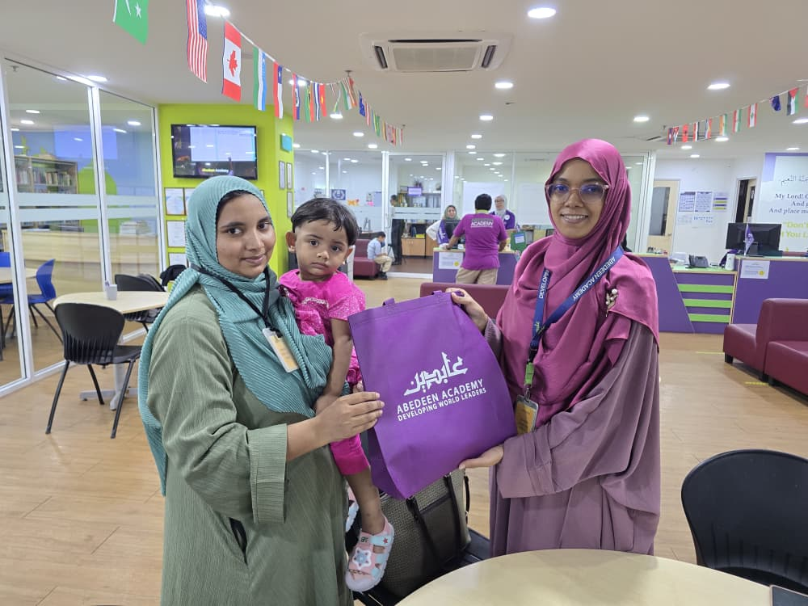
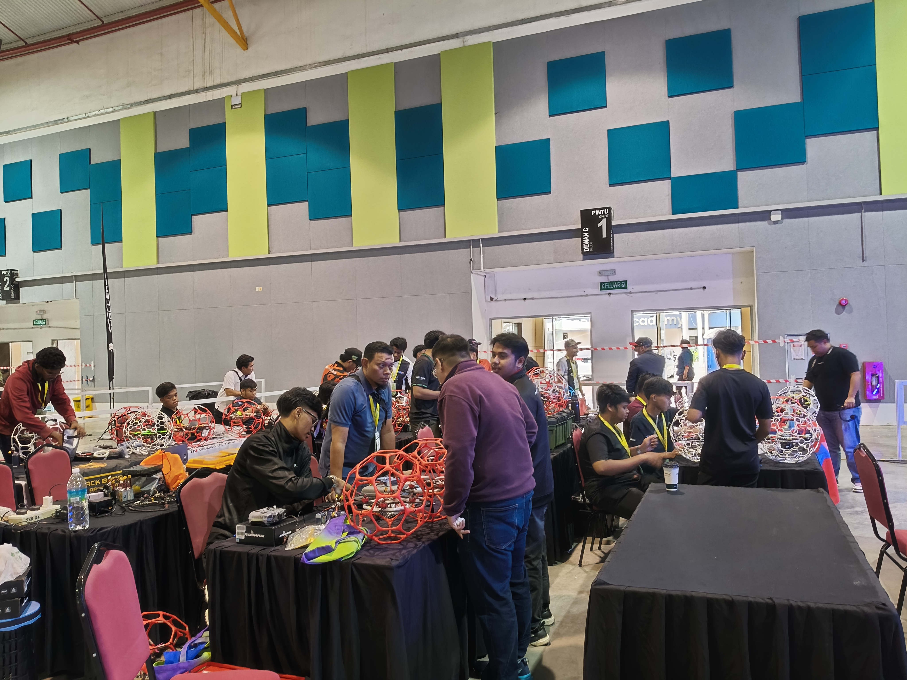
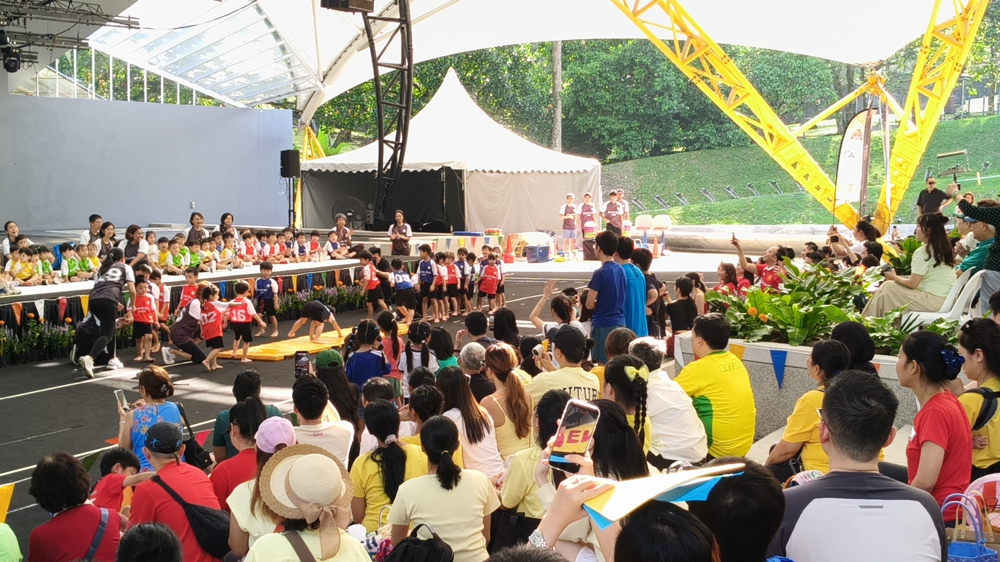
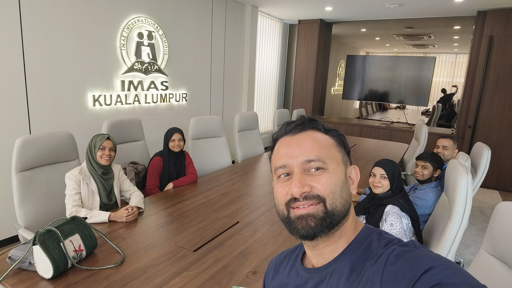
Malaysia offers a range of international-school options, including British and Cambridge pathways. Overseas Highway Kids helps parents explore suitable options based on each child's academic goals and family priorities.
Explore age, learning needs, curriculum, location and budget together.
Understand admission requirements, school options and practical next steps.
Guidance from first enquiry through preparing for enrolment.
Learn about schools we have visited and explore international education pathways suited to your child.
Our team has visited IMAS International School to learn more about the school environment. Parents can contact us to discuss admission enquiries and next steps.
See our school visit →Find a school environment that supports confidence, development and academic growth.
Explore options →Understand academic routes that can support future university ambitions.
Speak with an advisor →A school visit does not necessarily mean a formal institutional partnership. Availability and entry requirements must be confirmed with each school.
Select a child's age and preferred curriculum to see a suggested starting point. Our advisors can help explore actual schools and eligibility.
Our Overseas Highway Kids team visited IMAS International School in Kuala Lumpur as part of our commitment to exploring international education opportunities for students. Through school visits and direct engagement, we aim to help parents make informed decisions about their children's education and future.
Ask About School Admissions →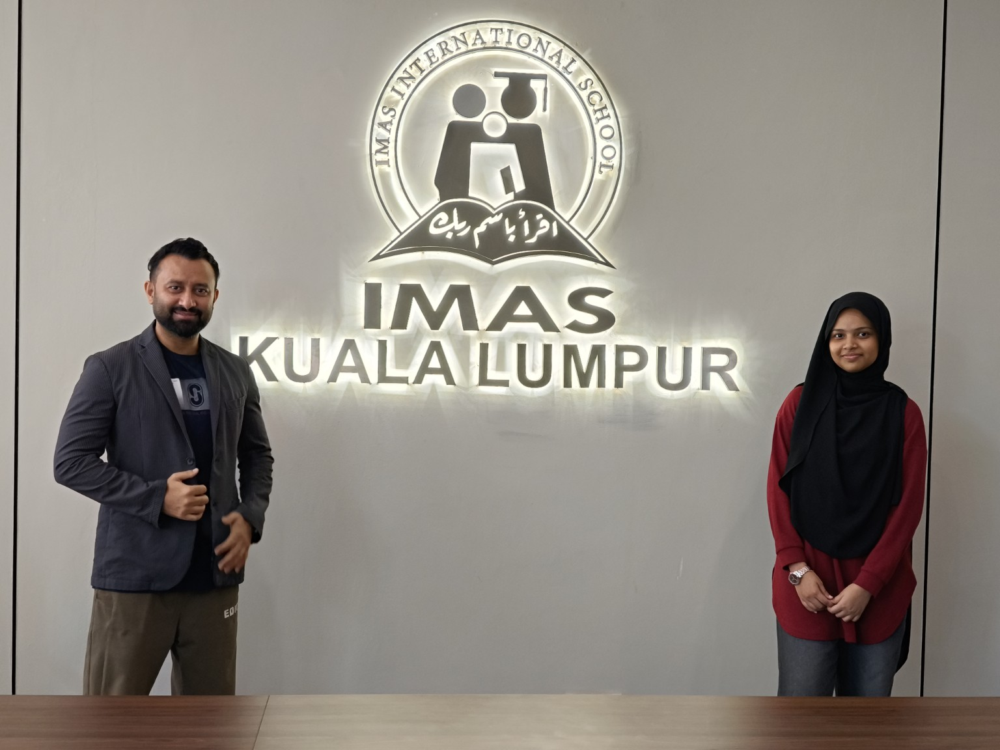
A collection of photographs shared by our team, reflecting our engagement with schools and international education. We will continue expanding this gallery with new visits and activities.
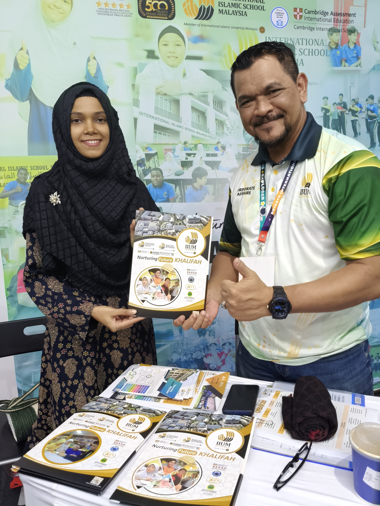
Choosing an international school starts with understanding a child's strengths, interests, and aspirations. We help parents begin that conversation with confidence.
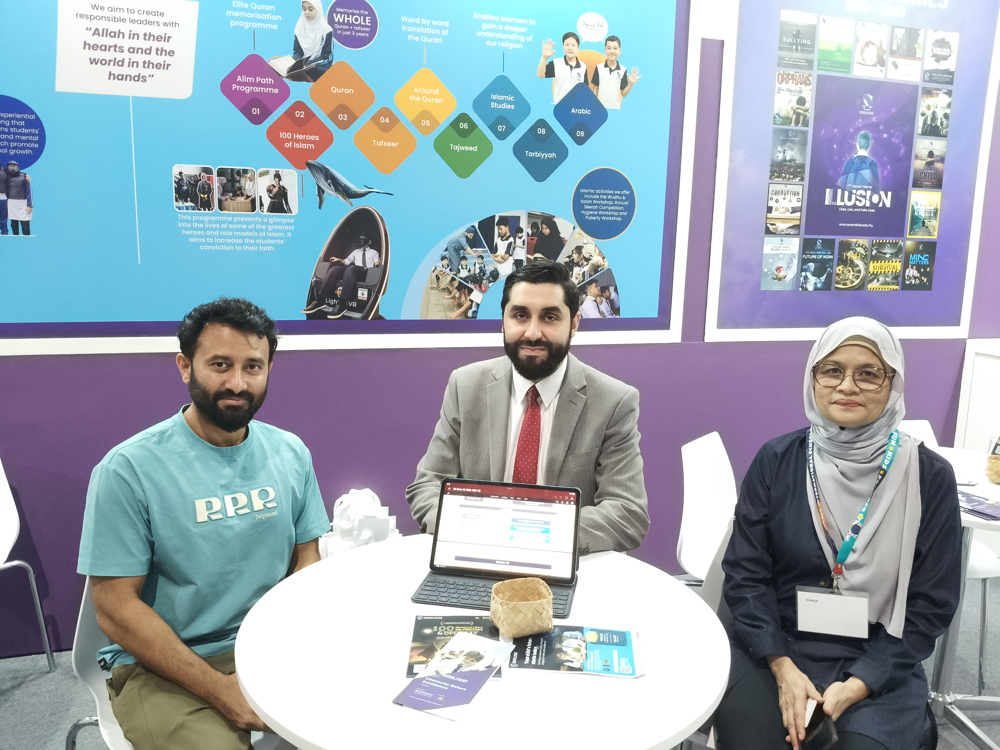
Malaysia offers diverse learning environments and international curricula. Our guidance helps families compare options before making an important decision.
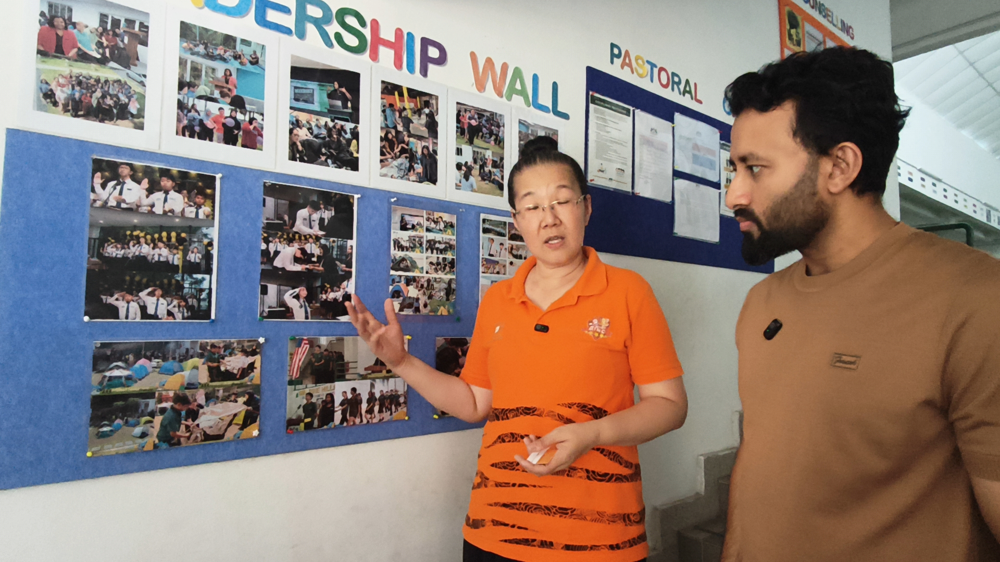
Every school journey is personal. We focus on finding a pathway that suits each learner's needs, from early years through secondary education.
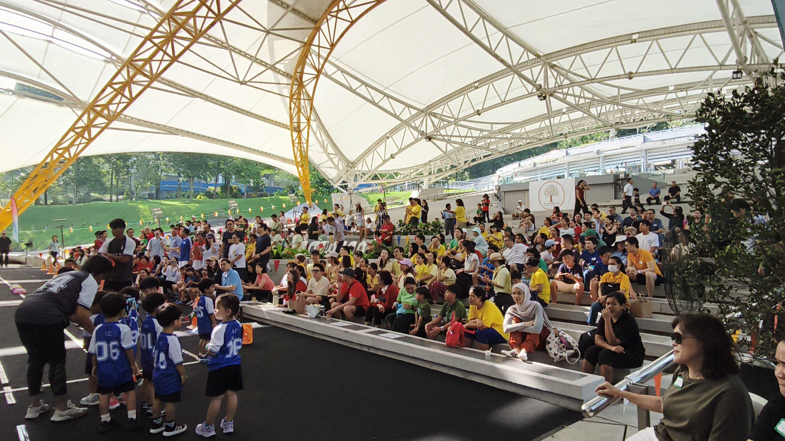
Clear communication helps families understand entry requirements, admission timelines, and what to prepare before approaching a school.
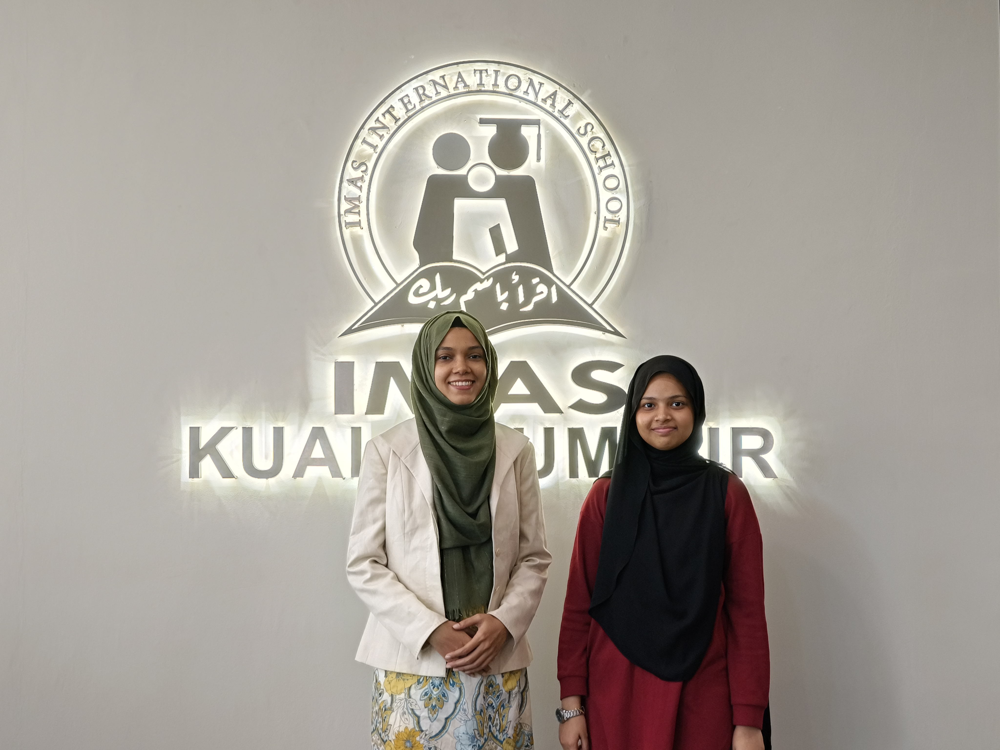
Our approach begins by listening to families. We consider the child's age, educational background, preferences, and future study goals.
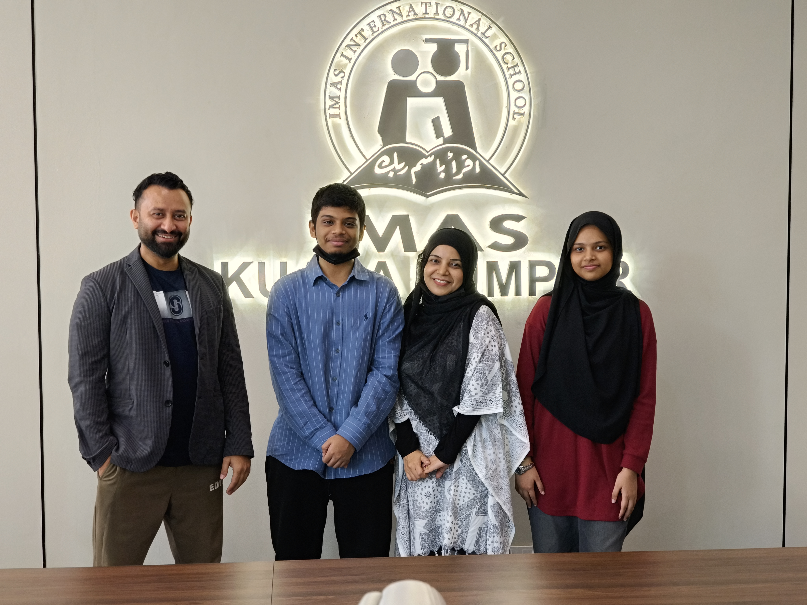
As families prepare for a new school chapter, we help them understand application steps and plan ahead for an informed start.
Watch our featured video or connect with Overseas Highway Kids on Facebook for school updates and family-focused education guidance.
Clear steps from early planning to preparing for school.
Discuss age, curriculum goals, preferred location and budget.
Review suitable options based on your family's priorities.
Get help understanding forms, documents and requirements.
Prepare practical next steps after the school's decision.
We help families understand different educational pathways and the questions to ask when comparing schools.
Offerings vary by school and student eligibility.
Discuss options →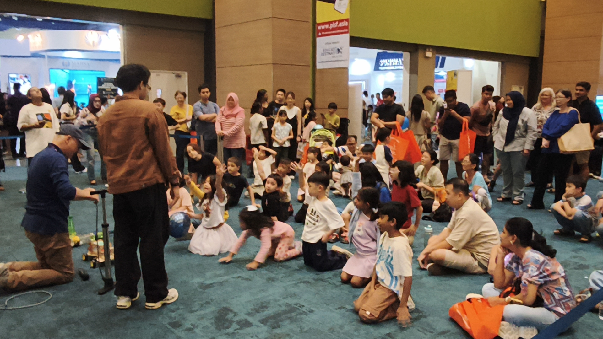
“Every child's future deserves a thoughtful beginning.”
We listen, guide and help families make informed school decisions.
Tell us what matters most to your family, and our team will help you explore school options in Malaysia.
WhatsApp: +880 1332-843551